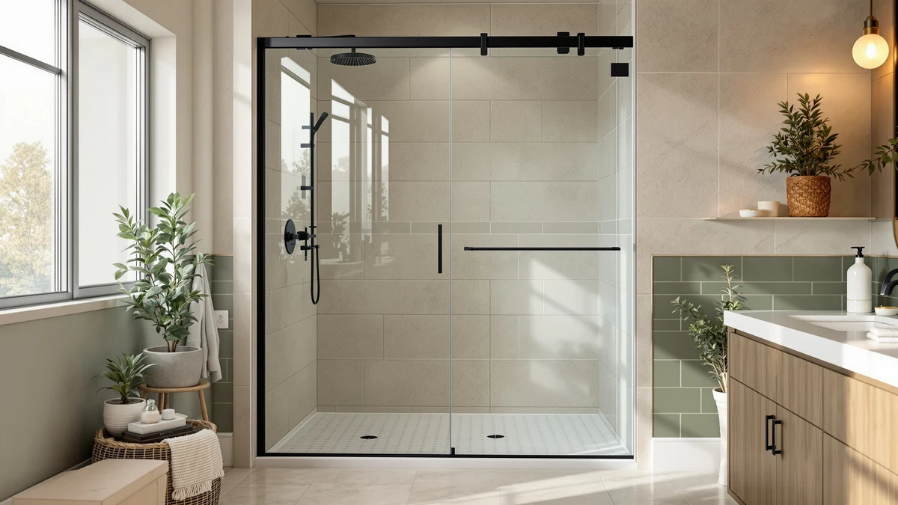

Best Shower Doors for Bathtubs (2026)
Prices and picks verified as of November 2026. Independent, reader-supported reviews.


Quick Answer
The best shower doors for bathtubs match a documented width and height range to your tub's exact opening, and the Aurisal Frameless Stainless Steel Sliding Shower is our pick for most standard 60 by 72 inch tub decks. If your opening runs wider, taller, or you want a different finish, six other doors below cover those cases at prices from $232.70 to $449.96.
Our pick: Frameless Stainless Steel Sliding Shower, $389.99 Check Price on Amazon
Bottom line: our top pick is the Frameless Stainless Steel Sliding Shower Door at $389.99. The best budget option is the GETPRO Shower Door Double Sliding 57-60 in. W x 72 in. H at $232.70.
Things to Know Before You Buy
- Measuring your tub opening's widest point against each door's listed width range is the single most important step when shopping for the best shower doors for bathtubs; several doors here are fixed at 60 inches while the KPUY and BoBliss adjust across 55 to 60 inches.
- Bathtub doors use shorter frames than full shower stall doors, typically 72 to 76 inches tall here, built to match a tub surround instead of a floor-to-ceiling stall opening.
- Stainless steel hardware, used on both Aurisal picks in this roundup, resists pitting and discoloration better than painted or matte finishes over years of water exposure.
- Double-sliding doors like the GETPRO let you open either side of the tub, while single-sliding doors push one panel behind a fixed pane.
- A level tub deck matters more than frame style for a leak-free fit; reviewers across every price point in this roundup link leaks to an uneven deck rather than the glass or hardware itself.
Finding the best shower doors for bathtubs comes down to matching a sliding frame to the exact width of your tub deck, since even an inch of mismatch can leave a gap that leaks or hardware that will not sit flush. Tub openings run narrower and the frames sit shorter than full stall shower doors, so a model built for a walk-in enclosure usually will not transfer over cleanly. We compared seven sliding doors sized for bathtub decks on their listed dimensions, current Amazon pricing, and patterns across verified owner reviews to find which ones fit the widest range of US tubs without a custom order.
Our pick is the Aurisal Frameless Stainless Steel Sliding Shower, a 60 by 72 and a quarter inch door that covers the standard American tub opening and keeps its stainless hardware from pitting the way painted finishes can over time. It sits at $389.99, which lands in the middle of this group rather than at either price extreme, and its dimensions match the most common tub width shoppers search for. If you need a wider or taller frame, several of the other picks below cover openings up to 60 inches and heights up to 76 inches.
The seven doors here range from $232.70 to $449.96, and price does not move in a straight line with quality. A couple of the least expensive options, the ENSO SENKA and the GETPRO double-sliding door, cover the same standard opening as pricier picks but skip the stainless hardware upgrade. We broke down the pros, cons and a specific best-for use case for each one below, along with the sizes and finishes that set them apart.
Why You Should Trust Us
This guide to the best shower doors for bathtubs is written and maintained by Ilane Tall, who covers bathroom fixtures and home renovation buying decisions for Best Shower Doors. We do not stock a warehouse of glass doors or run a physical testing lab, and we say so plainly instead of implying otherwise. Every pick here comes from manufacturer-listed dimensions, current Amazon pricing and patterns we find across verified owner reviews for that specific door. When a listing shows a recurring complaint, such as a track that sticks or a seal that leaks, we note it in the review rather than smoothing it over. We recheck prices regularly so the numbers reflect what a door costs today, not what it cost when we first added it to this roundup.
How We Picked
We started with sliding shower doors sized specifically for bathtub decks rather than full-height stall openings, since a door built for a 72 to 76 inch shower stall will not fit a standard 14 to 16 inch tub wall correctly. From there we filtered for tempered safety glass and a clearly documented width and height range, because vague dimensions are the single biggest cause of returns on this category of product. We also prioritized listings with enough verified reviews to show a real pattern of owner satisfaction rather than a handful of early ratings. Finally, we made sure the group of best shower doors for bathtubs covered more than one width band and finish, from the 55 inch narrow end up to 60 inches wide, and in both stainless and matte black hardware, so shoppers with different tubs and design preferences have a relevant pick instead of seven versions of the same door.
How We Compared
To rank these seven best shower doors for bathtubs, we compared each one against its published specifications: glass type, frame height, listed width range and price relative to coverage. We cross-checked those figures against current Amazon listings to confirm pricing had not drifted since the specs were first published, and we read through verified owner reviews looking for recurring themes, such as tracks that bind, seals that let water through, or hardware finishes that show wear early. Doors with a consistent pattern of leak or alignment complaints were weighted down relative to doors where owners reported a level, trouble-free fit months after installation. We did not physically install, mount or handle any of these doors ourselves; this comparison is built from published data and verified buyer feedback, and we say so rather than suggesting otherwise.
Our Picks

Frameless Stainless Steel Sliding Shower
What we like
- Stainless steel hardware resists the pitting and discoloration that painted frames show after repeated exposure to shower water
- 60 by 72 and a quarter inch frame matches the width and height most US tub conversions actually need
- Frameless glass panels keep the look clean and leave less metal trim to collect soap scum
Flaws but not dealbreakers
- At $389.99, it costs more than the budget picks in this roundup
- Reviewers note the track requires a level tub deck to glide smoothly, so an uneven deck can cause binding
| Material | — |
| Size | 60"*72"-1/4" |
The Aurisal Frameless Stainless Steel Sliding Shower earns the top spot in this roundup because its 60 by 72 and a quarter inch frame lines up with the tub opening size most American bathrooms actually have. Stainless steel hardware sits at the center of the pitch: unlike the painted aluminum used on several cheaper doors here, stainless resists the pitting and discoloration that comes from years of mineral-heavy water running down the track. The frameless glass panels also mean less metal trim across the opening, which translates to fewer corners for soap scum and mildew to build up in over time.
Owners report the sliding panels stay smooth well past the first few months, a complaint that sinks a lot of bathtub doors once the initial glide wears in. The main caveat is the price: at $389.99, it sits above three of the other picks here, and the listing itself notes the track needs a level tub deck to operate correctly, so an older or settled bathroom may need shimming first. For buyers who want the closest match to a standard tub opening without stepping up to a premium frame, this is the door we would point to first among the best shower doors for bathtubs we compared.

KPUY Frameless Shower Door 55-60"
What we like
- Adjustable 55 to 60 inch width range covers more tub sizes than fixed-width competitors
- 76 inch frame height fits taller tub surrounds that a standard 72 inch door would leave short
- Frameless glass design keeps the sightline open in bathrooms with higher ceilings
Flaws but not dealbreakers
- At $449.96, it is the most expensive door in this roundup
- Reviewers mention the taller panels add noticeable weight during installation, so a second set of hands helps
| Material | — |
| Size | 55-60" W x 76" H |
The KPUY Frameless Shower Door is built for bathtubs that a standard 72 inch frame does not fully cover. Its 76 inch height gives it four extra inches over most of the other picks here, which matters in bathrooms with a taller tub surround or a ceiling that leaves an awkward gap above a shorter door. The 55 to 60 inch adjustable width also gives it more flexibility than fixed-width competitors, since it can slide to fit several tub openings within that range instead of locking into one exact measurement.
That extra size comes at a cost. At $449.96, the KPUY is priced well above every other door in this roundup, and reviewers note the taller glass panels add real weight, enough that handling them during installation goes more smoothly with two people instead of one. For bathrooms where a 72 inch frame leaves a visible gap at the top of the tub surround, the added height and width range justify the premium; for a standard-height tub, one of the less expensive picks below covers the same opening for less money.

ENSO SENKA 56-60" W x
What we like
- Lowest price in this roundup at $239.39, undercutting every other pick by at least $10
- 60 by 72 inch frame matches the same common tub size as several pricier doors here
- Simple sliding design with fewer moving parts to adjust during installation
Flaws but not dealbreakers
- Listing does not specify frame material, so buyers comparing hardware finish should check with the seller before ordering
- Reviewers note the budget hardware finish shows wear sooner than the stainless options in this roundup
| Material | — |
| Size | 60" W X 72" H |
The ENSO SENKA shower door is the value play in this group, priced at $239.39 while still covering the same 60 by 72 inch tub opening that the pricier Aurisal doors target. For shoppers who have already measured a standard American tub deck and do not need the taller 76 inch frames or the widest adjustable ranges covered elsewhere in this roundup, there is little reason to pay more. The sliding mechanism is straightforward, with fewer adjustable parts than the double-sliding and wide-range doors on this list, which can make for a more predictable install.
The tradeoff shows up in finish and detail rather than fit. Owners report the hardware does not hold up quite as well over time as the stainless options higher up this list, and the listing itself does not spell out the frame material the way some competing doors do. For a primary or secondary bathroom where budget matters more than long-term hardware finish, the ENSO SENKA is one of the best shower doors for bathtubs on price alone, as long as the standard 60 inch opening matches your tub.

Frameless Shower Door Matte Black
What we like
- Matte black hardware matches the dark fixture trend more closely than the stainless options here
- 75 inch height sits taller than the standard 72 inch frame without stepping up to the priciest picks
- Single sliding panel design keeps the mechanism simple compared with double-sliding alternatives
Flaws but not dealbreakers
- Matte finishes can show water spots and fingerprints more visibly than stainless steel
- At 60 inches wide only, it does not offer the adjustable range some competing doors provide
| Material | — |
| Size | 60" W x 75" H Single Sliding |
The Ogonbrick Frameless Shower Door Matte Black is built for bathrooms moving away from the chrome and stainless look toward darker matte fixtures. At $249.30, it sits in the lower half of this roundup on price while still delivering a 75 inch frame height, three inches taller than the standard 72 inch door and enough to close a gap that shorter frames can leave above some tub surrounds. The single sliding panel keeps the mechanism simpler than the double-sliding doors elsewhere on this list, with one track to maintain instead of two.
Matte black finishes trade one maintenance issue for another: owners note the dark coating shows water spots and fingerprints more readily than polished stainless, so a quick wipe-down after use matters more here than on a stainless frame. The door is fixed at 60 inches wide rather than adjustable across a range, which works fine if your tub opening matches that measurement but leaves less margin for error than the KPUY or BoBliss doors above. For anyone matching black fixtures elsewhere in the bathroom, it is one of the few doors in this group built specifically for that finish.

GETPRO Shower Door Double Sliding
What we like
- Double-sliding panels let you open either side of the tub instead of pushing everything to one end
- Second-lowest price in this roundup at $232.70
- 60 by 72 inch frame matches the standard tub opening shared by several other picks
Flaws but not dealbreakers
- Two tracks instead of one means two sets of rollers and seals to keep clean and aligned
- Reviewers note the center seal where the two panels meet needs occasional adjustment to stay watertight
| Material | — |
| Size | 60'' W x 72'' H |
The GETPRO Shower Door Double Sliding takes a different approach to the same 60 by 72 inch opening several other doors in this roundup cover. Instead of one panel sliding across a fixed panel, both sides move independently, which means you can open access from either end of the tub rather than always pushing glass toward one side. At $232.70, it undercuts most of the roundup while still offering that added flexibility, making it one of the more practical picks for a shared bathroom where people get in and out from different sides.
The double-track design does add a maintenance consideration the single-sliding doors here do not have. Reviewers report the center seal where the two panels overlap needs occasional adjustment to stay fully watertight, and with two tracks instead of one, there are more rollers to keep clean of soap residue. For households that actually use both sides of a tub opening, the tradeoff is worth it; for a single-user bathroom, one of the simpler single-sliding doors on this list may mean less upkeep over time.

BoBliss Frameless Sliding Glass Shower
What we like
- 56 to 60 inch adjustable width covers a wider span of tub openings than fixed-width doors in this roundup
- 76 inch frame height matches the tallest option here, the KPUY, without the same $449.96 price tag
- Frameless glass design keeps sightlines open on a larger opening
Flaws but not dealbreakers
- At $429.99, it is the second most expensive door in this roundup
- Reviewers note the larger glass panels are heavier to handle during installation than the standard-size doors here
| Material | — |
| Size | 56-60" W x 76" H |
The BoBliss Frameless Sliding Glass Shower splits the difference between the standard-size doors in this roundup and the premium KPUY. It matches the KPUY's 76 inch frame height, useful for tub surrounds that leave a gap above a standard 72 inch door, while coming in at $429.99, about $20 less than the taller KPUY. The 56 to 60 inch adjustable width also gives it room to fit tub openings that fall slightly under a full 60 inches, which several fixed-width doors here cannot accommodate.
That combination of height and width puts it firmly in the upper price tier of this group, ahead of every pick except the KPUY. Reviewers note the larger glass panels carry noticeably more weight than the standard 72 inch doors, so installation goes easier with help on hand. For a tub opening that runs slightly narrow or a surround that needs the extra height, the BoBliss is a reasonable middle ground between the standard-size picks and the pricier KPUY above.

Frameless Stainless Steel Sliding Shower
What we like
- Same 60 by 72 and a quarter inch frame as our top pick, so it fits the identical standard tub opening
- Stainless steel hardware carries the same pitting resistance as the Aurisal pick above
- A useful second option if our top pick is temporarily out of stock
Flaws but not dealbreakers
- At $399.99, it costs $10 more than the nearly identical Aurisal pick higher on this list
- The listing does not call out any feature that distinguishes it from that other Aurisal door
| Material | — |
| Size | 60"*72"-1/4" |
This second Aurisal Frameless Stainless Steel Sliding Shower shares its 60 by 72 and a quarter inch frame and stainless hardware with our top pick above, right down to the dimensions. Rather than treat it as a separate style, it is worth thinking of as a backup option, useful when the first Aurisal listing is temporarily out of stock or priced higher on a given day. The stainless finish carries the same resistance to pitting and discoloration that made the other Aurisal door our top recommendation for standard tub openings.
At $399.99, it runs about $10 above its near-twin, and nothing in the listing points to a feature that sets it apart beyond that price difference. For most shoppers, the lower-priced Aurisal listing above is the better default; this one earns its place in the roundup as the fallback pick when that listing is unavailable, rather than as a distinct choice on its own merits among the best shower doors for bathtubs.
Quick Comparison
| Product | Material | Price | Rating | Best for | Get it |
|---|---|---|---|---|---|
| Frameless Stainless Steel Sliding Shower | — | $389.99 | — | Most standard 60 inch tub openings | View on Amazon → |
| KPUY Frameless Shower Door 55-60" | — | $449.96 | — | Taller surrounds up to 76 inches | View on Amazon → |
| ENSO SENKA 56-60" W x | — | $239.39 | — | Budget-conscious standard tubs | View on Amazon → |
| Frameless Shower Door Matte Black | — | $249.30 | — | Matte black fixture matching | View on Amazon → |
| GETPRO Shower Door Double Sliding | — | $232.70 | — | Access from either side of the tub | View on Amazon → |
| BoBliss Frameless Sliding Glass Shower | — | $429.99 | — | Wider openings needing extra height | View on Amazon → |
| Frameless Stainless Steel Sliding Shower | — | $399.99 | — | Backup to our top pick | View on Amazon → |
The Competition
We also looked at several framed bathtub sliding doors priced under $200 that did not make this roundup because their listings lacked a documented height range, a detail that affects fit more than almost any other spec on a tub door. A handful of pivot-style doors came up in our research as well, but pivot doors swing open from a hinge rather than slide along a tub deck track, so we left them out of a roundup specifically about sliding doors for bathtubs. We also set aside a few frameless doors in the 60 to 64 inch range that run wider than nearly every standard US tub opening, since they target a narrower slice of shoppers than the sizes covered here. Across the seven doors in this roundup, the Aurisal Frameless Stainless Steel Sliding Shower remains our top pick among the best shower doors for bathtubs, with the other six covering the widths, heights and finishes it does not.
What these prices have actually done
We check the price of every product on this page every hour and keep the record. These figures are observations, not estimates or forecasts.
- KPUY Frameless Shower Door has ranged from $424.97 to $499.96 across 43 hourly price checks since September 27, 2026. It was $449.96 at the last check.
- ENSO SENKA 56-60" W x 72" H Semi-Frameless Bypass Sliding Shower Door has ranged from $239.39 to $269.99 across 40 hourly price checks since September 27, 2026. It was $239.39 at the last check, the lowest price we have recorded for it.
- GETPRO Shower Door Double Sliding 57-60 in. W x 72 in. H has ranged from $232.70 to $273.76 across 40 hourly price checks since September 27, 2026. It was $232.70 at the last check, the lowest price we have recorded for it.
- BoBliss Frameless Sliding Glass Shower Door has ranged from $419.99 to $439.99 across 45 hourly price checks since September 27, 2026. It was $429.99 at the last check.
Last updated November 23, 2026. Amazon prices change constantly; the figure you see on Amazon right now is the one that counts.